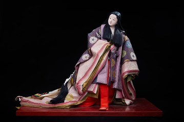

Kinuzure là tác phẩm thuộc dòng Jidai Fuzoku Ningyō – dòng búp bê truyền thống tái hiện trang phục, phong tục và vẻ đẹp của con người Nhật Bản qua các thời kỳ lịch sử. Tên gọi "Kinuzure" có nghĩa là tiếng sột soạt của những lớp áo lụa khi người mặc cử động, một hình ảnh giàu chất thơ thường xuất hiện trong văn học và nghệ thuật Nhật Bản.
Búp bê khắc họa một thiếu nữ trong tư thế bước đi nhẹ nhàng, khoác bộ kimono nhiều lớp với hoa văn dệt nổi tinh xảo. Mái tóc dài buông tự nhiên cùng những nếp gấp mềm mại của trang phục tạo nên cảm giác chuyển động uyển chuyển, thể hiện kỹ thuật chế tác tinh tế của các nghệ nhân.
Trong văn hóa Nhật Bản, Kinuzure không chỉ gợi lên vẻ đẹp thanh lịch của trang phục truyền thống mà còn biểu trưng cho sự duyên dáng, kín đáo và tinh thần thẩm mỹ coi trọng sự hài hòa trong từng cử chỉ. Tác phẩm góp phần lưu giữ vẻ đẹp của trang phục và phong tục Nhật Bản, đồng thời phản ánh nét đẹp văn hóa được truyền lại qua nhiều thế hệ.
きぬずれは時代風俗人形の作品です。時代風俗人形とは、日本の各時代の人々の衣装、風俗、美しさを再現した伝統人形のことです。「きぬずれ」とは、身につけた人が動くたびに絹の衣が触れ合って立てるかすかな音のことで、日本の文学や芸術にしばしば登場する詩情豊かな言葉です。
人形は、精巧な浮き織りの文様の着物を幾重にもまとい、軽やかに歩む娘の姿を表しています。自然に垂らした長い髪と、衣装の柔らかなひだが、しなやかな動きを感じさせ、職人の繊細な技を示しています。
日本文化において「きぬずれ」は、伝統衣装の上品な美しさを思わせるだけでなく、たおやかさ、奥ゆかしさ、そして一つひとつのしぐさの調和を重んじる美意識を象徴しています。本作は日本の衣装と風俗の美しさを今に伝え、世代を超えて受け継がれてきた文化の美しさを映し出しています。